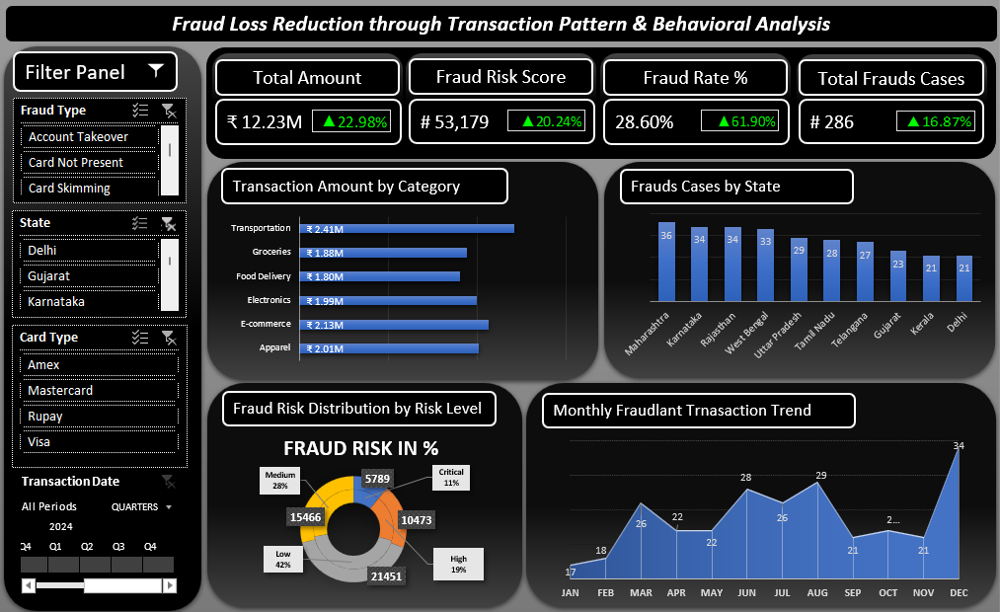
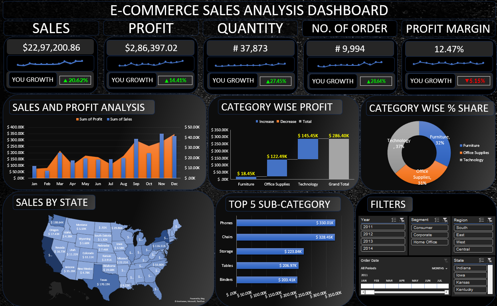
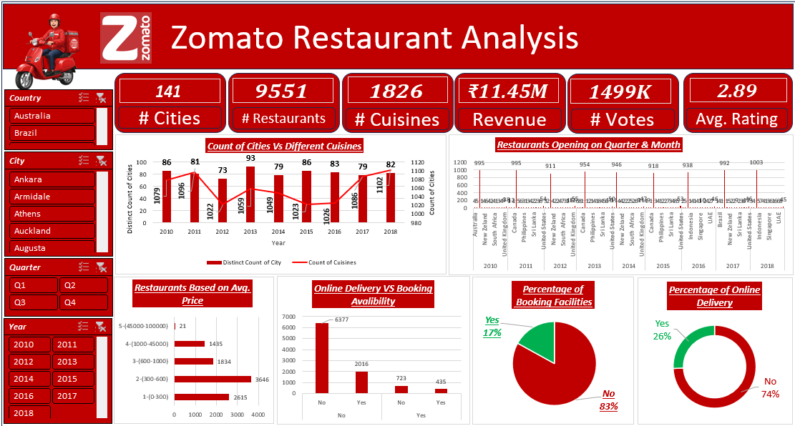
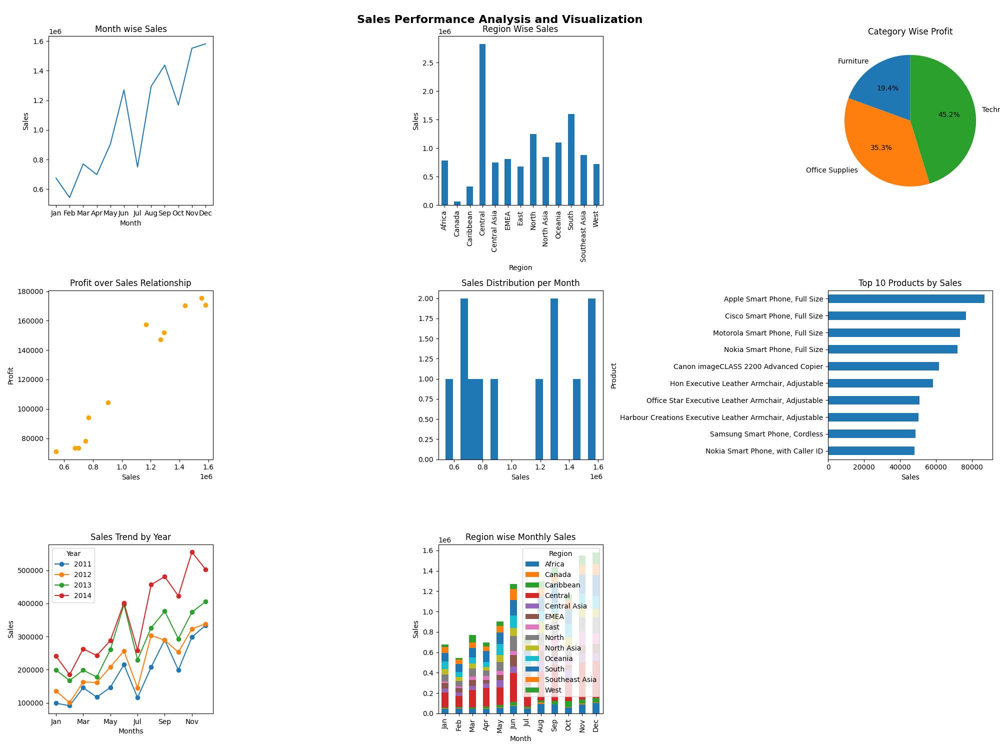
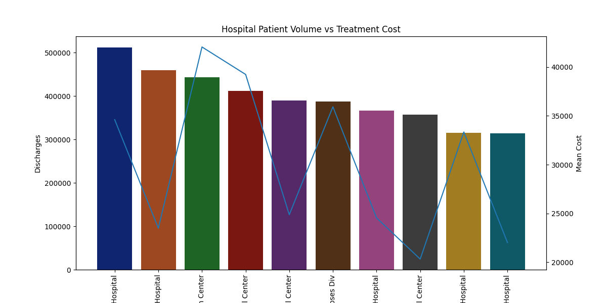
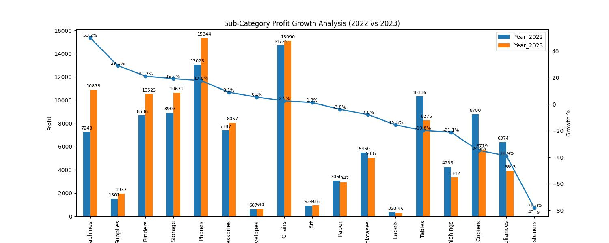

Featured Analytics Projects
Explore my dashboards, analytics solutions and business intelligence projects built using Power BI, Excel, SQL, Python and Tableau.
Power BI

Zomato Global Restaurant Analytics
Interactive Power BI dashboard analyzing restaurant performance, cuisines, customer ratings, pricing trends, and business KPIs across multiple countries.

Customer Churn Analysis Dashboard
Built an interactive customer churn dashboard to identify churn patterns, customer demographics, contract types, and retention opportunities using business intelligence.

Personal Financial Analysis Dashboard
Designed a personal finance dashboard to monitor income, expenses, savings, budgets, and financial goals through interactive visual analytics.
Excel

Credit Card Fraud Analysis Dashboard
Developed an Excel dashboard to detect fraudulent transactions, monitor fraud trends, and visualize transaction risks using interactive reports.

E-Commerce Sales Analysis Dashboard
Created a dynamic sales dashboard to analyze revenue, profit, customer segments, regional performance, and product categories.

Zomato Restaurant Analysis Dashboard
Built an Excel dashboard to explore restaurant ratings, cuisines, pricing, and customer preferences with interactive business insights.
Python

Sales Performance Analysis Dashboard
Interactive Power BI dashboard analyzing restaurant performance, cuisines, customer ratings, pricing trends, and business KPIs across multiple countries.

Hospital Resource Analytics
Performed exploratory data analysis on healthcare data to uncover patient trends, hospital utilization, and operational insights through Python visualizations.
SQL

Retails Order Sales Analysis- Python & SQL
Interactive Power BI dashboard analyzing restaurant performance, cuisines, customer ratings, pricing trends, and business KPIs across multiple countries.